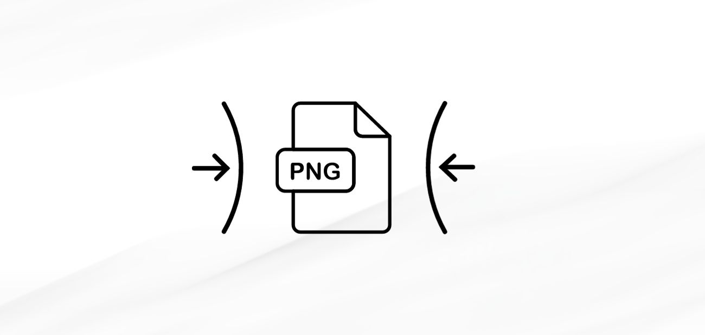
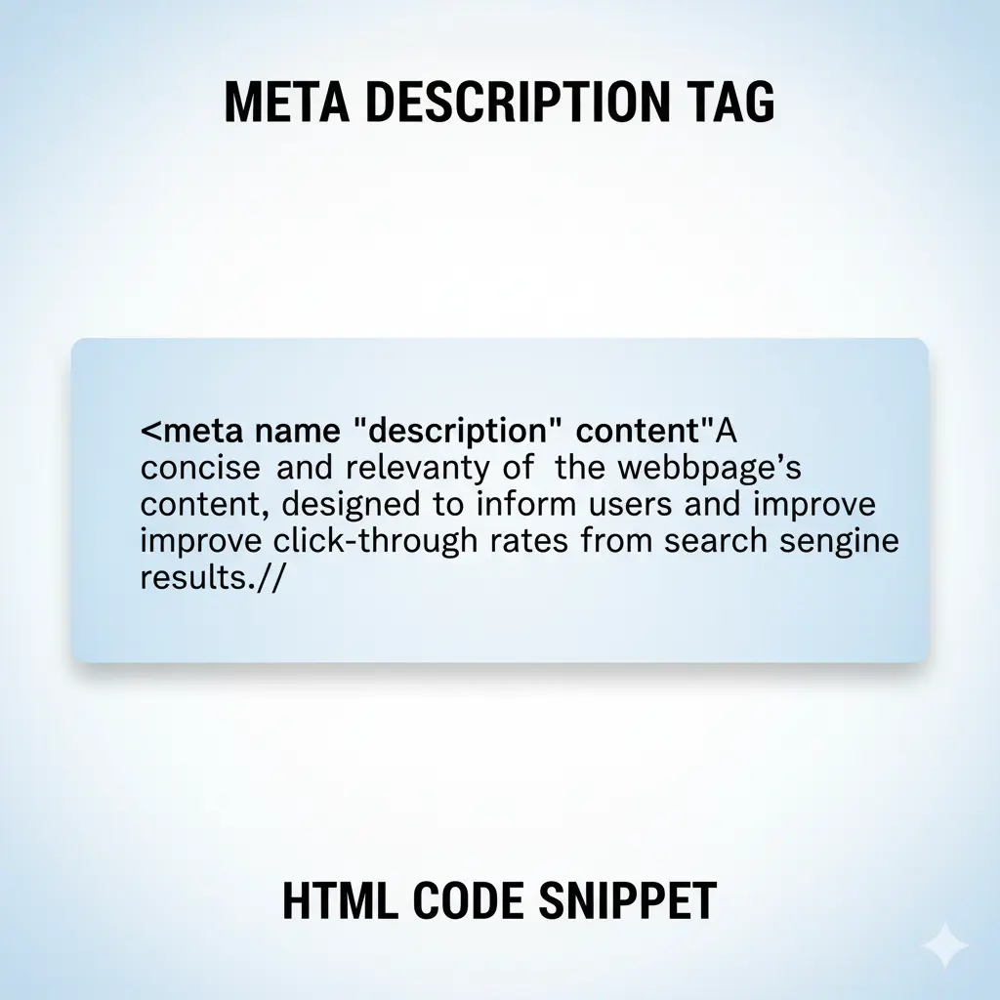
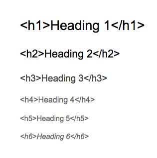
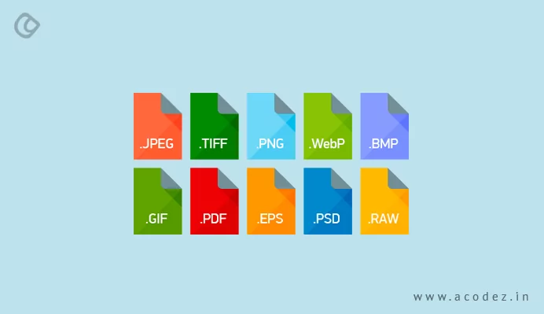
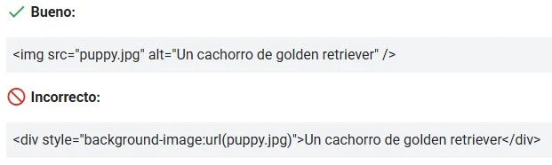
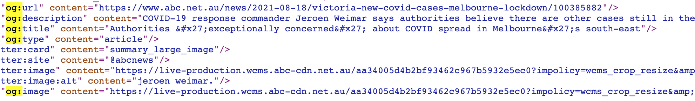

¿Qué es?
El término SEO hace referencia a un conjunto de procesos técnicos los cuales tienen como meta principal optimizar los motores de búsqueda como Google para mejorar la presencia de un sitio web en los resultados.
Su principal finalidad es incrementar el tráfico orgánico hacia el sitio web, es decir, las visitas que llegan de manera natural sin necesidad de pagar publicidad.
El SEO busca en escencia responder de la mejor manera a las consultas de los usuarios, lo cual implica crear contenidos útiles y relevantes que satisfagan las necesidades de información de los usuarios.
Importancia del SEO
A toda hora, sin importar el día, los usuarios de distintos motores de búsqueda realizan consultas para encontrar información, productos o servicios.
Para lograr tener un sitio web reconocido por los usuarios, es necesario aparecer en los primeros resultados de las búsquedas.
Implementar el SEO en nuestra página web es importante por su alcance a los usuarios. Una buena optimización en el motor de búsqueda puede aumentar significativamente la visibilidad y el tráfico del sitio, esto significa más ingresos de distintos tipos.
Dentro de las razones para implementar SEO se encuentran:
1. Aumento en la visibilidad del sitio web
El primer resultado orgánico de Google tiene 10 veces más posibilidades de recibir un clic que una página situada en la posición número 10.

2. Confianza y Credibilidad en el Usuario
Aparecer en los primeros resultados de búsqueda genera confianza en los usuarios, ya que asocian la relevancia del contenido con la posición en la que aparece.
El SEO es una herramienta fundamental para cualquier página web que busque destacar en internet. Más allá de posicionar un sitio en los primeros lugares de búsqueda, su verdadero valor está en ofrecer a los usuarios contenido relevante, accesible y confiable.
Implementar una buena estrategia de SEO no solo significa atraer más visitas, sino también construir credibilidad, aumentar las oportunidades de negocio y garantizar una mejor experiencia al usuario. En un entorno digital cada vez más competitivo, el SEO deja de ser una opción y se convierte en una necesidad para asegurar la visibilidad y el crecimiento sostenido de cualquier proyecto web.
Velocidad de Carga y SEO
Este es uno de los factores más puros del SEO, ya que abordar los tiempos de carga mejora la clasificación del sitio, aumentando vistas y recoconocimiento del sitio web
Un sitio web que carga rápidamente no solo mejora la experiencia del usuario, sino que también es favorecido por los motores de búsqueda como Google. La velocidad de carga es un factor crucial en el algoritmo de clasificación, ya que los usuarios tienden a abandonar sitios que tardan mucho tiempo en cargar.
Existen múltiples maneras de optimizar la velocidad de carga de un sitio web, dentro de algunas de estas maneras están las siguientes:
1. Optimización de imágenes
Las imágenes están dentro de las principales responsables de la velocidad de carga de un sitio web. Usar imágenes adaptables puede ser una solución a este tipo de problema
También es recomendable comprimir las imágenes y archivos antes de subirlas al sitio web, para reducir su tamaño sin perder calidad.
2. Código limpio y optimizado

Las líneas de código innecesarias es otro de los factores por los cuales las páginas web pueden volverse lentas. Mantener un código limpio y optimizado no solo mejora la velocidad de carga, sino que también facilita el trabajo de los motores de búsqueda al indexar el contenido.
3. Redirecciones claras
Las redirecciones innecesarias, desactualizadas o mal implementadas pueden afectar negativamente la velocidad de carga de un sitio web. Es importante asegurarse de que las redirecciones sean claras y directas, evitando cadenas de redirección que puedan ralentizar la experiencia del usuario.
SEO Técnico
El SEO Técnico se refiere al proceso de optimizar la configuración de un sitio web para que los buscadores puedan rastrear, indexar y mostrar el contenido del mismo. Por esta razón el SEO técnico se considera un pilar fundamental del posicionamiento en buscadores.
Se le dice "técnico" porque no se relaciona con el contenido del sitio web ni lo que promueve, sino con las configuraciones técnicas como por ejemplo el estado HTTP, la estructura de URL, el uso de etiquetas meta y otros elementos que facilitan el trabajo de los motores de búsqueda.
1) Importancia de las metaetiquetas semánticas
Las metaetiquetas y el uso correcto de estas dentro de HTML semántico ayudan a los motores de búsqueda a entender mejor el contenido de una página web, lo que puede mejorar su posicionamiento en los resultados de búsqueda.
Dentro de las más importantes se encuentran las siguientes:
- Etiqueta "title": Esta es la que define el titulo que se muestra en la pestaña del navegador y en los resultados de búsqueda. Se recomienda que sea breve y descriptiva.
- Etiqueta "description": Esta es la encargada de proporcionar un resumen del contenido de la página, esta no afecta en el ranking pero puede influir en la tasa de clics. 
2) Datos Estructurados
Estos son datos estructurados a través de etiquetas, bajo el estándar Schema.org, que ayudan a los motores de búsqueda a entender mejor el contenido de una página web.
Su importancia radica en que aportan contexto y aumentan la visibilidad del contenido.
Al implementar datos estructurados, se deben incluir elementos como:
- Título o encabezado del contenido
- Descripción
- URL principal de la página
- Autor o entidad responsable
- Imagen destacada
Es recomendable validar el marcado con la Prueba de resultados enriquecidos de Google para asegurarse de que cumple con las directrices.
3) Uso correcto de encabezados
El uso adecuado de los encabezados (H1, H2, H3, etc.) es crucial para la estructura del contenido y la experiencia del usuario. Los motores de búsqueda utilizan estos encabezados para entender la jerarquía y el contexto del contenido.
Algunas recomendaciones para el uso de encabezados son:
- Utilizar un solo H1 por página, que debe contener la palabra clave principal.
- Usar H2 para secciones principales y H3 para subsecciones.
- Incluir palabras clave relevantes en los encabezados, pero de forma natural.
Un buen uso de los encabezados no solo mejora la legibilidad del contenido, sino que también ayuda a los motores de búsqueda a indexar la página de manera más efectiva.
4) Optimización de imágenes para el SEO
La optimización de imágenes es un aspecto crucial del SEO técnico, ya que las imágenes mal optimizadas pueden ralentizar la velocidad de carga de una página web y afectar negativamente la experiencia del usuario.
Google nos brinda algunas Prácticas recomendadas para la optimización de imágenes. Algunas de ellas incluyen:
- Usar elementos de imagen HTML para incorporar imágenes.
- Utilizar imágenes responsivas.
- Utilizar formatos de imagen admitidos. 
- Optimizar las imágenes para lograr velocidad y calidad

El uso de las etiquetas de imagen estándar en HTML facilita que los motores de búsqueda detecten y comprendan las imágenes de una página. Google puede localizar e interpretar las imágenes que están dentro del atributo src de una etiqueta img, incluso cuando esta forma parte de otro elemento, como picture. En cambio, Google no puede indexar las imágenes que se añaden mediante CSS.

Las imágenes responsivas se adaptan automáticamente al tamaño de la pantalla del usuario, lo que mejora la experiencia de navegación en dispositivos móviles y reduce el tiempo de carga.
Las páginas web emplean el elemento picture o el atributo srcset dentro de una etiqueta img para mostrar imágenes adaptables según el dispositivo o la resolución de pantalla. Sin embargo, algunos navegadores y rastreadores aún no reconocen correctamente estos atributos. Por eso, se recomienda incluir siempre una URL alternativa en el atributo src, para garantizar que la imagen se muestre en todos los casos.
La Búsqueda de Google reconoce imágenes que se encuentran en el atributo src de una etiqueta y que estén en los formatos BMP, GIF, JPEG, PNG, WebP, SVG o AVIF. Además, se recomienda que la extensión del archivo coincida con su tipo real (por ejemplo, que una imagen JPEG tenga la extensión .jpg o .jpeg).
También es posible insertar imágenes directamente en el código usando URIs de datos, lo que permite incluir un archivo (como una imagen) dentro del propio documento. Para hacerlo, se configura el atributo src de la etiqueta con una cadena codificada en base64, siguiendo el formato correspondiente.
Las imágenes de alta calidad resultan mucho más atractivas para los usuarios que aquellas que se ven borrosas o con poca claridad. Además, las fotos bien definidas llaman más la atención en las miniaturas de los resultados de búsqueda, lo que puede incrementar el tráfico hacia tu sitio web.
Sin embargo, las imágenes suelen ser uno de los elementos que más afectan el peso total de una página, lo que puede volverla lenta y consumir más recursos al cargarse. Por eso, es importante aplicar las técnicas más actuales de optimización y diseño responsivo de imágenes, de modo que los usuarios disfruten de una experiencia visual rápida, ligera y de alta calidad.
Es posible analizar la velocidad de tu sitio web utilizando herramientas como PageSpeed Insights de Google, que proporciona información sobre el rendimiento de las imágenes y sugiere mejoras.
Etiquetas Open Graph
En 2010, Facebook presentó las metaetiquetas Open Graph con el objetivo de facilitar la forma en que las páginas web se comparten dentro de su plataforma. Con el tiempo, otras redes sociales como Twitter y LinkedIn también adoptaron este sistema para mejorar la experiencia del usuario al compartir enlaces.
Cuando pegas un enlace en Facebook, normalmente aparece una vista previa del contenido. Antes de que existieran las etiquetas Open Graph, los desarrolladores no tenían control sobre cómo se mostraban esos enlaces, por lo que a menudo la información aparecía incompleta o incorrecta.
El protocolo Open Graph permite definir con precisión qué título, descripción e imagen se mostrarán en las publicaciones, asegurando que los enlaces compartidos reflejen la información más relevante y atractiva.
En la siguiente imagen se muestra un ejemplo de metaetiquetas Open Graph dentro del código HTML de una página. Gracias a ellas, cuando alguien comparte la URL en Facebook, se genera una vista previa personalizada y correctamente formateada del enlace.
Implementar las etiquetas Open Graph dentro de un sitio web es una estrategia efectiva para mejorar la apariencia de tus enlaces compartidos en redes sociales, lo que puede aumentar la tasa de clics y el tráfico hacia el sitio.
Importancia de las Etiquetas Open Graph
Las redes sociales son un canal clave para generar tráfico y conversiones. Con una buena combinación de estrategia y diseño, puedes captar el interés de los usuarios, motivarlos a hacer clic, conocer más sobre tu marca, adquirir tus productos o interactuar con tu contenido.
Las metaetiquetas Open Graph permiten mejorar la vista previa de los enlaces que se comparten en redes sociales, haciendo que se vean más atractivos y relevantes para tu audiencia, y aumentando así las posibilidades de que las personas interactúen con ellos.
Veamos un ejemplo práctico de cómo implementar estas etiquetas en un sitio web.
Este es el aspecto de un enlace sin protocolo Open Graph en Facebook:
Y este es el aspecto de un enlace con protocolo Open Graph en Facebook:
Como se puede observar, la vista previa del enlace con Open Graph es mucho más atractiva y completa, lo que puede aumentar significativamente la probabilidad de que los usuarios hagan clic en él.
Twitter Cards
Las Twitter Cards son una herramienta similar a las etiquetas Open Graph, pero específicamente diseñadas para Twitter. Permiten a los desarrolladores y creadores de contenido controlar cómo se muestra la información compartida en esta red social, incluyendo imágenes, títulos, descripciones y, en algunos casos, llamadas a la acción.
A diferencia de los tweets tradicionales, que solo muestran un enlace acortado y poco atractivo visualmente, las Twitter Cards permiten generar una vista previa enriquecida del contenido. Esto hace que las publicaciones sean más llamativas y ayuden a captar la atención de los usuarios, incrementando la posibilidad de interacción.
De hecho, se ha comprobado que los tweets que incluyen una Twitter Card pueden lograr entre 3 y 10 veces más difusión (retweets y favoritos) que los tweets normales. Gracias a su formato visual y contextual, las Twitter Cards funcionan como una forma eficaz de marketing dentro de Twitter.
Entre los principales beneficios del uso de Twitter Cards se incluyen:
- Mayor visibilidad de tus enlaces en Twitter.
- Mejor imagen de marca al mostrar contenido más completo y profesional.
- Mayor actividad social gracias a una presentación más atractiva.
- Más interacción por parte de los usuarios (clics, retweets, respuestas).
- Aumento de conversiones, lo que puede traducirse en más visitas o ventas.